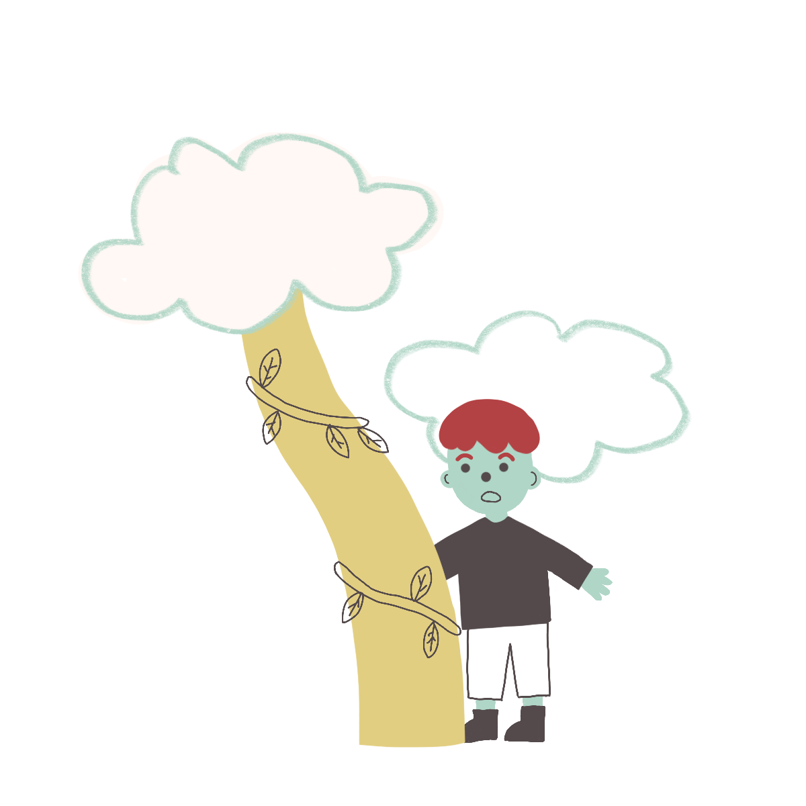
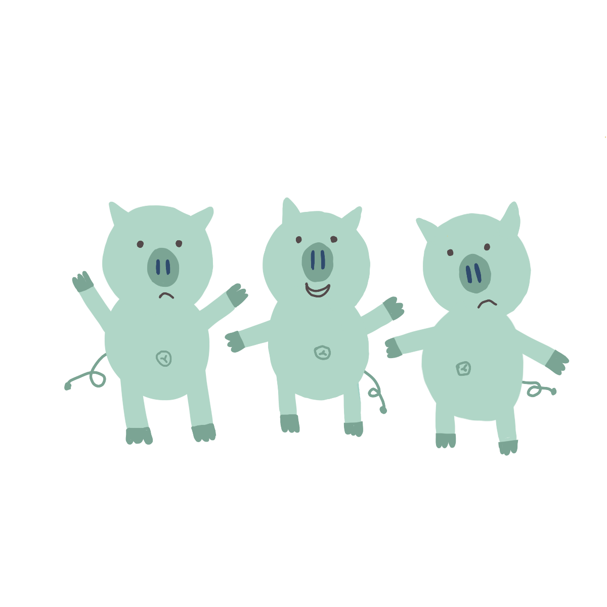
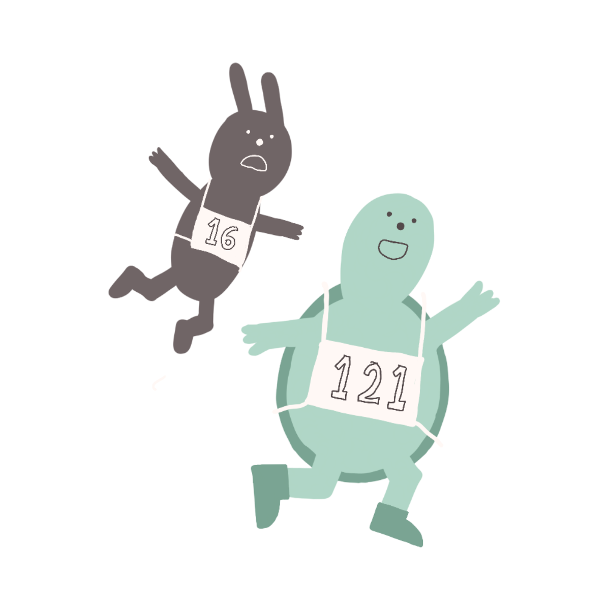

Jack and the Beanstalk
During the night, the magic beans cause a gigantic beanstalk
to grow outside Jack's window. The next morning, Jack climbs
the beanstalk to a land high in the sky. He finds an enormous
astle and sneaks in. Soon after, the castle's owner, a giant,
returns home.

The Three Little Pigs
The story begins with the three little pigs being sent out
into the world by their mother, to "seek out their fortune."
The first little pig builds a house of straw, but a wolf blows
it down and devours him. The second little pig builds a house
of sticks, which the wolf also blows down, and the second
little pig is also devoured. What is going to happen to the
third pig?

The Tortoise And The Hare
The story concerns a Hare who ridicules a slow-moving
Tortoise. Tired of the Hare's arrogant behavior, the Tortoise
challenges him to a race.[2] The hare soon leaves the tortoise
behind and, confident of winning, takes a nap midway through
the race.
The Gingerbread Man
A childless old woman bakes a gingerbread man, who leaps from
her oven and runs away. The woman and her husband give chase,
but are unable to catch him. The gingerbread man then outruns
several farm workers and farm animals.
Twas The Night Before Christmas
On Christmas Eve night, while his wife and children sleep, a
father awakens to noises outside his house. Looking out the
window, he sees Santa Claus in an air-borne sleigh pulled by
eight reindeer. After landing his sleigh on the roof, the saint
enters the house through the chimney, carrying a sack of toys
with him.